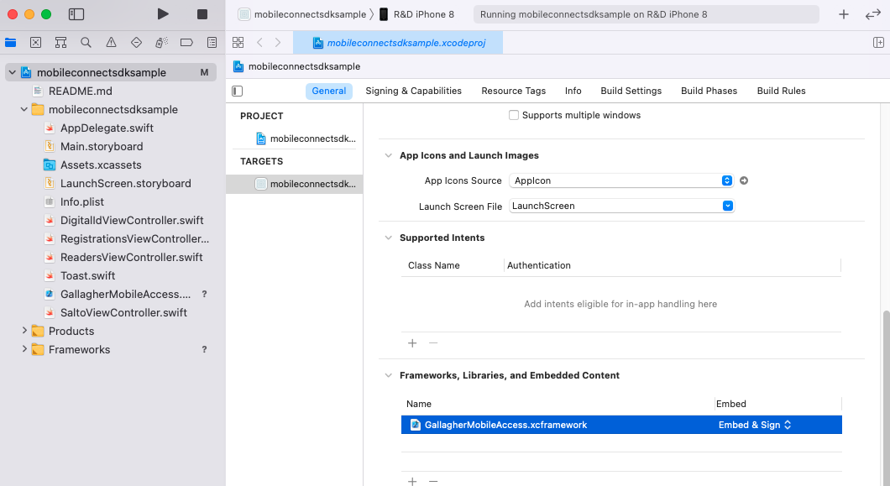

developer-guide Reference
developer-guide Reference
Gallagher Mobile Connect SDK for iOS - Developer Guide
Contents
- Pre-requisites
- Getting Started
- Mobile Credentials
- Reader Discovery and Access
- Frequently Asked Questions
- Background Access
Pre-requisites
- Xcode 11 (This document tested against Xcode 11.0 build 1A420a)
- An app targeting iOS 10 or later
- Swift 5.1 - The functionality and interfaces provided by the SDK are swift; You must use swift to access them.
- RxSwift (This document tested against RxSwift 5.0.1)
Getting Started
1. Add the SDK framework to your project
Unzip the zip file.
Add GallagherMobileAccess.framework to your Xcode project - The easiest way to do this is by dragging and dropping it from the Finder into the Xcode project navigator
Example:
You will also need to add GallagherMobileAccess.framework to the Embedded Binaries section of the General settings for your project.
2.1 Dependency: RxSwift
The SDK uses RxSwift internally.
You may install RxSwift via CocoaPods or Carthage if you use those, or if you would like to install it manually, use the following procedure:
- Download RxSwift.framework.zip from https://github.com/ReactiveX/RxSwift/releases
As-tested RxSwift 5.0.1 framework zip direct link
NOTE: At the point in time of this document revision, RxSwift had not yet published an Xcode 11 compatible binary release. Gallagher provide a version of RxSwift 5.0.1 which you can use instead. Our version is built using Xcode 11 using the same source revision (b3e888b) as the RxSwift 5.0.1 official release
- Unzip the zip file and RxSwift.framework to your project - The easiest way to do this is by dragging and dropping it from the Finder into the Xcode project navigator. You can find RxSwift.framework under the Carthage/Build/iOS folder

2.2 If upgrading from Xcode 9: Remove Dependency on fake CommonCrypto framework.
In previous releases of the SDK, you needed to create a fake CommonCrypto framework, and add it to your Xcode swift compiler import paths.
In Xcode 10, Apple removed the need for the fake framework, but if you are upgrading an existing app from Xcode 9, you will most likely find it doesn’t compile on Xcode 10 or later. You need to delete the fake CommonCrypto framework and delete it from Xcode swift compiler import paths.
3. Configure your application - Plist
Add the following to your app’s Info.plist:
<key>NSBluetoothPeripheralUsageDescription</key>
<string>Used to detect and connect to Gallagher Bluetooth® enabled readers for access.</string>
<key>NSBluetoothAlwaysUsageDescription</key>
<string>Used to detect and connect to Gallagher Bluetooth® enabled readers for access.</string>
<key>NSFaceIDUsageDescription</key>
<string>Use Face ID to access secure areas that require two factor authentication.</string>
You may wish to customise the text.
4. Configure the Mobile Connect SDK within your application.
You must call the MobileAccessProvider.configure() method before first using the SDK.
configure may only be called once.
Thereafter you can gain access to the SDK using the static MobileAccessProvider.instance method. If you attempt to access instance before configure() a fatal error will be thrown and your program will exit.
The configure method may be called with no arguments, or you may customise any of
databaseFilePath: Optional. The filesystem location at which the SDK stores it’s internal SQLite databaselocalization: Optional. Allows you to customise UI messages used by the SDK. See the Customising SDK messages section.
Once the SDK is configured, you may want to call the setScanning(enabled: true) method to activate scanning for readers using Bluetooth Low Energy. Here is an example of an application which starts scanning and auto-connect upon launch.
import GallagherMobileAccess
@UIApplicationMain
class AppDelegate: UIResponder, UIApplicationDelegate {
private let mobileAccess: MobileAccess
init() {
mobileAccess = MobileAccessProvider.configure()
}
// ... other code ...
func application(_ application: UIApplication, didFinishLaunchingWithOptions launchOptions: [UIApplicationLaunchOptionsKey: Any]?) -> Bool {
mobileAccess.isAutomaticAccessEnabled = true
mobileAccess.setScanning(enabled: true)
return true
}
At this point you should be able to compile and launch your app, and the setScanning method should not crash.
The SDK will not do anything however, until you register at least one mobile credential.
Reference:
MobileAccessProvider
MobileAccess
Mobile Credentials
In order to gain access or communicate with readers over Bluetooth, you must first have a registered credential to authenticate your user and device.
Mobile credentials are created in Command Centre, either using the Command Centre Client, or via the Command Centre REST API.
For more information, see the REST API documentation regarding Creating Cards and Cardholders.
1. Registering a Mobile Credential
You will need to obtain an invitation URL. If you are creating credentials using the REST API, you will also be able to use it to retrieve the invitation URL. Please refer to the server-side integration guide and REST api documentation for more information.
You can also build the invitation url using the resolveInvitationUri method in the Mobile Connect SDK.
Given an invitation code, and the hostname of the Gallagher Cloud Server (https://commandcentre-ap-southeast-2.security.gallagher.cloud) you may call this method to generate the invitation URL.
When getting started, the easiest option will most likely be to use the Command Centre client to send yourself an invitation via email, and use the invitation code from the Manual Registration
section of the standard Gallagher invitation email message.
If you do this, be sure to create a new Mobile Credential Card Type, and untick the Send SMS Verification Code
option for the Mobile Credential Card Type.
SMS verification is not supported for third-party apps using the Mobile Connect SDK.
Once you have obtained the invitation URL, use the registerCredential(URL, RegistrationDelegate) method to begin the registration process. The SDK will asynchronously call the callback methods on the RegistrationDelegate to inform you of success or failure. Callbacks will arrive on the main thread.
There is also an overload to the registerCredential method which accepts two callback functions, rather than a single RegistrationDelegate object, which may be more convenient.
Example:
guard let invitationUrl = mobileAccess.resolveInvitationUrl(serverHost, invitation: invitationCode) else { return }
// using callback overload, rather than delegate directly
mobileAccess.registerCredential(
url: invitationUrl,
onRegistrationCompleted: { credential, error in
if let error = error {
toast("Registration Error \(error)")
}
else {
toast("Registered!")
}
},
onAuthenticationTypeSelectionRequested: { selector in
// If the credential allows for second-factor authentication, then we need
// to ask the user which method they'd prefer; Fingerprint or PIN?
// pop a dialog here and ask the user their preference
let userChoice = .pin
selector(true, userChoice)
})
For a comprehensive example, please see the file RegistrationsViewController.swift in the iOS SDK sample application.
Reference:
MobileAccess
RegistrationDelegate
MobileCredential
SecondFactorAuthenticationTypeSelector
SecondFactorAuthenticationType
2. Listing Registered Credentials
Use the mobileCredentials property. This will return an array of MobileCredential - which you should copy into your own array or other stable collection.
3. Deleting a Mobile Credential
Use the deleteMobileCredential(MobileCredential, CredentialDeleteCompletedHandler) method. The SDK will asynchronously call the completion lambda CredentialDeleteCompletedHandler to inform you of success or failure. Callbacks will arrive on the main thread.
You can obtain a reference to the credential object to delete by getting mobileCredentials. Mobile Credential objects have an id which you should use if you wish to compare instances.
Example:
mobileAccess.deleteMobileCredential(credential) { (credential, error) in
if let error = error {
toast("Error deleting credential \(error)")
}
else {
toast("Deleted!")
}
}
For a comprehensive example, please see the file RegistrationsViewController.swift in the iOS SDK sample application.
MobileAccess
CredentialDeleteCompletedHandler
MobileCredential
Reader Discovery and Access
1. Tracking whether the SDK is working or not
There are a variety of reasons why the SDK may not work even though you have called setScanning(enabled: true), such as Bluetooth being disabled in your device system settings, lack of permissions, etc.
You should use the addSdkStateDelegate(SdkStateDelegate) method. The SDK will asynchronously call the callback methods on the SdkStateDelegate to inform you of state changes. Callbacks will arrive on the main thread.
You may wish to log these state changes, or prompt the user to perform some action (such as granting permissions, or giving them a button to click to enable Bluetooth, etc)
Example:
mobileAccess.addSdkStateDelegate(self)
// ...
func onStateChange(isScanning: Bool, states: [MobileAccessState]) {
var messages = [String]()
for state in states {
switch state {
case .noCredentials:
messages.append("Please register a credential")
case .noPasscodeSet:
messages.append("Please set a passcode on your device")
// ...
}
}
// display messages in a TableView for example
}
Reference:
MobileAccess
SdkStateDelegate
MobileAccessState
2. Auto-connect
You must set the isAutomaticAccessEnabled property to true in order to enable auto-connect. You can set it to false to disable it later if you require.
Note that enabling and disabling automatic access does not affect bluetooth scanning, which continues until you call setScanning(enabled: false)
By default, the Mobile Connect SDK will automatically attempt to connect to any nearby readers if the device enters the configured range.
If you wish to be informed about auto connect events, use the addAutomaticAccessDelegate(AccessDelegate) method. The SDK will asynchronously call the callback methods on the AccessDelegate to inform you of success or failure. Callbacks will arrive on the main thread.
Any calls to addAutomaticAccessDelegate should be balanced by a call to removeAutomaticAccessDelegate to prevent memory leaks.
Example:
override func viewDidLoad() {
super.viewDidLoad()
mobileAccess.addAutomaticAccessDelegate(self)
}
deinit {
mobileAccess.removeAutomaticAccessDelegate(self)
}
// ...
func onAccessStarted(reader: Reader) {
updateDisplayState(reader, .active)
}
func onAccessCompleted(reader: Reader, result: AccessResult?, error: ReaderConnectionError?) {
if error != nil {
updateDisplayState(reader, .failed);
} else if let accessResult = result {
updateDisplayState(
reader,
result.isAccessGranted() ? .succeeded : .failed);
}
}
Reference:
MobileAccess
AccessDelegate
Reader
AccessResult
ReaderConnectionError
3. Discovery of readers
Call the addReaderUpdateDelegate method to provide a ReaderUpdateDelegate object to be called when a reader is discovered via Bluetooth.
If you wish to show an interactive list of nearby readers in your application, you can use this to maintain a list of readers and other related information (such as visual state, appearance, etc) and display that information.
If your app only wants to use the auto-connect feature of the Mobile Connect SDK, then you can skip this section; The SDK will work regardless of whether you call addReaderUpdateDelegate
Example:
//...
mobileAccess.addReaderUpdateDelegate(self)
//...
func onReaderUpdated(_ reader: ReaderAttributes, updateType: ReaderUpdateType) {
if updateType == .attributesChanged {
if let idx = readers.index(where: { $0.reader.id == reader.id }) {
replaceReaderInList(idx, reader)
} else { // a new reader
addReaderToList(reader)
}
} else if updateType == .readerUnavailable {
if let idx = readers.index(where: { $0.reader.id == reader.id }) {
removeReaderFromList(reader)
}
}
}
For a full example, refer to ReadersViewController.swift in the SDK sample app, specifically the onReaderUpdated method of the ReadersViewController.
Reference:
MobileAccess
ReaderUpdateDelegate
ReaderAttributes
ReaderUpdateType
4. Manual Connect
Once you have discovered a reader, you can manually initiate an access request using the requestAccess(Reader, AccessDelegate) method. The SDK will asynchronously call the callback methods on the AccessDelegate to inform you of success or failure. Callbacks will arrive on the main thread.
Example:
func onReaderClicked(reader: Reader) {
mobileAccess.requestAccess(reader: reader, delegate: self)
}
// ...
func onAccessStarted(reader: Reader) {
updateDisplayState(reader, .active)
}
func onAccessComplete(reader: Reader, result: AccessResult) {
updateDisplayState(reader, .succeeded)
}
func onAccessError(reader: Reader, error: ReaderConnectionError) {
updateDisplayState(reader, .failed)
}
For a full example, refer to ReadersViewController.swift in the SDK sample app, specifically the above-named methods in the ReadersViewController class
Reference:
MobileAccess
Reader
AccessResult
ReaderConnectionError
5. Actions/Overrides
If the readers are configured to support it, the Mobile Connect SDK can ask the reader to perform actions such as overriding to Arm/Disarm the alarm zone, locking or unlocking, or toggling configured outputs.
This is a two step process. First you must request the list of available actions, and then you must request to perform the specific action.
5.1 Enumerating the list of available actions
Use the enumerateReaderActions(Reader, ReaderActionEnumerationCompletedHandler) method. The SDK will asynchronously call the completion lambda ReaderActionEnumerationCompletedHandler to inform you of success or failure. Callbacks will arrive on the main thread.
Example:
mobileAccess.enumerateReaderActions(reader: reader) { (reader, actions, error) in
if let error = error {
toast("enumerateReaderActions failed: \(error)")
}
else if let actions = actions {
if actions.count == 0 {
toast("No actions available")
return
}
showListOfAvailableActions(actions)
}
}
Reference:
MobileAccess
ReaderActionEnumerationCompletedHandler
Reader
ReaderAction
ReaderConnectionError
5.2 Performing an action
Use the requestReaderAction(Reader, ReaderAction, ReaderActionCompletedHandler) method to perform a specific action. . The SDK will asynchronously call the completion lambda ReaderActionCompletedHandler to inform you of success or failure. Callbacks will arrive on the main thread.
Example:
// The ReaderAction object comes from the enumeration step
mobileAccess.requestReaderAction(reader: reader, action: action) { (reader, action, error) in
if let error = error {
toast("action error: \(error)")
}
else {
toast("\(action.name) succeeded")
}
}
For a full example, refer to ReadersViewController.swift in the SDK sample app, specifically the above-named methods in ReadersViewController mentioned above.
MobileAccess
ReaderActionCompletedHandler
Reader
ReaderAction
ReaderConnectionError
Frequently Asked Questions
1. Why does the device need a passcode enabled?
If a user attempts to register a mobile credential on an Apple device which does not have a passcode enabled, the registration operation will fail.
This is due to a technical implementation detail and is to improve security.
Internally, the Mobile Connect SDK stores two FIDO credentials for each site.
- The first-factor credential doesn’t require any user-interaction, and is used when the Command Centre Access Zone is not in PINs mode.
- The second-factor credential requires the mobile device user to input either a PIN or their fingerprint/face, and is used when the Command Centre access zone is in PINs mode.
The second-factor credential needs to be more secure, because zones in PINs mode typically have much higher physical security requirements. As such, the Mobile Connect SDK requests that Apple performs additional encryption on the keys associated with second-factor credentials. This is implemented in iOS by using the passcode feature, which is why credential registration requires a passcode to be enabled.
Note that if a user registers, then turns off their passcode, the second-factor keys will be invalidated. They will be able to authenticate against readers where the Access Zone is not in PINs mode, however if they attempt to authenticate where second factor is required, they will fail. The only available solution is for that user to re-enable their passcode, then repeat the registration process.
Background Access
By default, the SDK will continuously scan for and connect to Bluetooth enabled readers while it is running in the foreground. This is the standard behaviour for iOS applications.
If you would like it to only scan (for example) when a particular ViewController is on-screen, then you should use the setScanning method to control this.
If you would like the SDK to scan for readers while it is not visible in the foreground, you will need to enable background access.
There are two levels
of background access functionality
1. Standard background access.
This employs the default Apple Core Bluetooth background processing behaviour, as determined by Apple. This behaviour may (and has in the past) change between iOS versions. For more information refer to Apple’s Core Bluetooth Background Processing Documentation
Enabling standard background access requires no code changes.
Add the following to your app’s Info.plist
<key>UIBackgroundModes</key>
<array>
<string>bluetooth-central</string>
</array>
Unfortunately, in iOS 10 and 11, Apple aggressively throttle background scanning in order to conserve battery life.
The observed behaviour of standard
background access on an iOS 10 or 11 phone is generally that nothing appears to happen when the app is not in the foreground, however you can usually trigger
background access as follows:
- Lock the phone screen
- Approach and place your phone next to a reader
- Turn the phone screen on - The act of turning the phone screen on seems to trigger apple’s background behaviour
As per apple’s documentation, even when your app is running in the background iOS may kill it after some time. The exact rules around when and if iOS will kill it vary and change over time, but generally if you make heavy use of your phone, you can expect iOS to kill it more quickly in order to free up resources for other apps.
2. Extended background access.
The Mobile Connect SDK offers an improved ability to scan for readers in the background, however this requires your app to request use of Background Location services. The SDK does not actually use or monitor the user’s location at all, but the permission is required to enable the extended scanning mode.
To enable this, you must do the following
Set the SDK’s
backgroundScanningModeproperty to.extendedEnable iOS background location services as according to Apple’s Requesting Always Authorization documentation. In summary - use
CLLocationManager.requestAlwaysAuthorization(), and add the required keys to your Info.plist
Example:
<key>NSLocationAlwaysUsageDescription</key>
<string>Your location is needed to detect readers using Bluetooth®. GPS is not used and your location is never shared.</string>
<key>NSLocationAlwaysAndWhenInUseUsageDescription</key>
<string>Your location is needed to detect readers using Bluetooth®. GPS is not used and your location is never shared.</string>
<key>NSLocationWhenInUseUsageDescription</key>
<string>Your location is needed to detect readers using Bluetooth®. GPS is not used and your location is never shared.</string>
...
<key>UIBackgroundModes</key>
<array>
<string>location</string>
<string>bluetooth-central</string>
</array>
The observed behaviour of standard
background access on an iOS 10 or 11 phone is generally that access works regardless of whether the app is visible or the screen is powered on or off, however iOS will still kill the app periodically if it is in the background for a period of time.
Extended background scanning also uses more battery - causing a roughly (with large margin of error) 10% additional drop in battery life over a work-day period.
3. Background Access Notifications
If the SDK determines that we are within auto-connect range of a reader, but that reader requires second factor authorisation, it will display a Notification asking the user to open the App.
This is required because second factor authorisation involves asking the user for a passcode or fingerprint, which isn’t possible unless the App is visible in the foreground.
By default however, iOS does not allow notifications unless the user grants permission. You can request permission using the following code snippet:
let notificationSettings = UIUserNotificationSettings(types: [.alert, .badge, .sound], categories: nil)
UIApplication.shared.registerUserNotificationSettings(notificationSettings)
For a full example, refer to AppDelegate.swift in the SDK sample app, specifically the enableExtendedBackgroundScanning() method
IMPORTANT! App Store Review Information: If you wish to publish an app to the App Store which has always
background location scanning privileges, Apple’s App-review team take this seriously. You may need to provide sufficient documentation explaning exactly what and why the background location tracking is used for, and you must demonstrate that you have implemented the proper permission checks according to Apple’s documentation. Apple may contact you to discuss this.
For example, in order to get App review approval for Gallagher’s mobile connect application, we were required to submit a video of the app being used in the background, and they contacted us via the phone to discuss and understand the feature.
We are required to place the following text in our app’s description in the app store:
Continued use of GPS running in the background can dramatically decrease battery life.
We also place the following text in our App review notes in itunes connect, which we find helps prevent accidental rejection:
The app uses Background location updates to enable scanning for bluetooth readers while the app is in the background
As previously requested by app review, we have implemented the proper permission check with appropriate description (shown in the video when enabling background scanning) and added the required disclaimer about background location affecting battery life to the app description.
If the user does not grant background location permissions to the app, it detects this, and the
Backgound Scanningsetting remains off. The app will continue to work correctly in the foregroundIf the user subsequently wants to turn background scanning on, but has previously denied location permissions, the app will detect this and offer to open the iOS Settings app so they can manually grant the location permissions.
Troubleshooting / Customising the SDK
1. Configuring logging (optional)
If you encounter unexpected errors or behaviour, you may wish to enable logging from the SDK to help with troubleshooting.
By default, the SDK will not log anything. To enable logging, you have two options:
Construct a
LogConfiguration(fileURL: aFileUrl)struct, and assign it to static theLog.configurationproperty. This will cause the SDK to write it’s log output to the given file. You are responsible for creating any subdirectories or otherwise making the file available.Construct a
LogConfiguration(externalWriter: LogWriter)struct, and assign it to static theLog.configurationproperty. When the SDK wishes to log something, it will invokewrite(level: LogLevel, message: () -> String, parameters: LogParameters)method on the externalWriter.
For more information, please refer to the SwiftDocs
For an example, please see the file AppDelegate.swift in the iOS SDK sample application, which redirects the SDK’s internal logging to the system-wide os_log infrastructure.
2. Customising SDK messages
The SDK will at times need to prompt the user for information, such as to enter their fingerprint or passcode. By default the SDK will generate messages in English, however you have the ability to alter these messages - either to simply change the message text to better suit your application, or to translate it into other languages.
To achieve this, you can pass a custom MobileAccessLocalization object to the MobileAccess.configure() method as part of configuring the SDK. You should do this once, at application startup, or before your first use of the SDK.
The MobileAccessLocalization object has three properties which are callback functions. The SDK will invoke these callback functions so you may generate the appropriate message text. This is best explained by example:
let loc = MobileAccessLocalization(
notificationDetails: { reader in (title: "Open App!", body: "Accessing \(reader.name)") },
registrationDetails: { siteName in "Register: \"\(siteName)\"" },
authenticationDetails: { readerName in "Authenticate: \"\(readerName)\"" })
mobileAccess.configure(localization: loc)
All properties are optional
Reference: MobileAccessLocalization
2.1. notificationDetails
If your application uses the background access feature of the Mobile Connect SDK, then when the user encounters a reader that is configured to require a second factor, they will need to open the App in order to complete the request. (For example, You can’t prompt someone for their fingerprint when your app isn’t on-screen)
In order to facilite this, the SDK will show a Local Notification asking the user to open the app. When the SDK wants to show this notification, it will call the notificationDetails localization callback.
The callback will be passed the name of the Bluetooth Reader that they are connecting to, and must return a tuple of (title: String, body: String). The title is used for the first line of the notification message (in bold text) and the body is used for the subsequent lines of the notification message. The notification will display your app’s icon.
If you do not provide a notificationDetails callback, the SDK will default to a callback which is the equivalent of:
(title: "", body: "Open App for \(reader.name)")
Reference:
NotificationDetailsProvider
2.2 registrationDetails
When the user registers a mobile credential, the SDK will ask them for either their Passcode or Fingerprint/Face ID, as per the registration section earlier in this document.
The SDK will show Apple’s system user interface for Fingerprint/Passcode/Face ID, which allows a single custom line of text. It is useful to show the site name on this screen so the user knows what they are registering for.
The callback will be passed the name of the site (as known to the Gallagher Cloud), and should return a message to show on this registration screen.
If you do not provide a registrationDetails callback, the SDK will default to the equivalent of:
"Register for \"\(siteName)\""
Reference:
RegistrationDetailsProvider
2.3 authenticationDetails
When the user attempts to access a door that requires second factor authentication, the SDK will ask them for either their Passcode or Fingerprint/Face ID - whatever they chose when they previously registered their credential.
The SDK will show Apple’s system user interface for Fingerprint/Passcode/Face ID, which allows a single custom line of text. It is useful to the reader name on this screen so the user knows what they are authenticating for.
The callback will be passed the name of the reader, and should return a message to show on this authentication screen.
If you do not provide a authenticationDetails callback, the SDK will default to the equivalent of:
"Authenticate for \"\(readerName)\""
Reference:
AuthenticationDetailsProvider